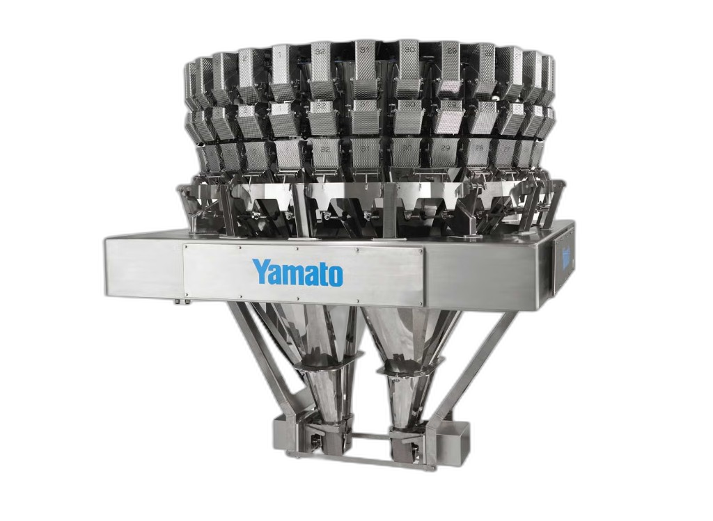

Waga wielogłowicowa
Najlepsza do produktów sypkich, kawałkowych lub o nieregularnym kształcie — chipsy, mrożone warzywa, kawałki mięsa, orzechy. Wysoka wydajność i powtarzalność przy dużych wolumenach.
Naważanie to proces odmierzania określonej ilości produktu — wagowo lub sztukowo — przed jego zapakowaniem. W praktyce oznacza to, że każde opakowanie na końcu linii produkcyjnej zawiera dokładnie tyle produktu, ile deklaruje etykieta, bez ręcznego ważenia każdej porcji.

Wartości orientacyjne — zależne od konfiguracji linii i produktu.
01 Jak to działa
Wybierz etap i zobacz, jak produkt przechodzi przez linię — od podania, przez ważenie, po higienę.
Produkt trafia do systemu przez dopasowaną do niego technologię podawania — rynny wibracyjne, przenośniki taśmowe lub elewatory.
Dobór zależy od rodzaju produktu: inaczej podaje się chipsy czy cukierki w folii, inaczej mrożone ryby, świeżą sałatę czy drobne elementy metalowe.
Waga odmierza porcje odpowiadające zadanej wadze docelowej. To centralny element całej linii — od jego dokładności i tempa zależy wydajność wszystkiego, co dzieje się dalej.
Platformy, systemy podające i dystrybucyjne muszą być dobrane indywidualnie do konkretnego produktu i formatu opakowania.
Odważone porcje trafiają do systemu dystrybucji (tzw. system wielokanałowy), który kieruje je do jednego lub kilku wylotów.
Liczba kanałów zależy od tego, czy maszyna pakująca obsługuje jeden, czy kilka torów jednocześnie.
Specjalne systemy zrzutowe umieszczone przed maszyną pakującą upraszczają cały proces — zapobiegają przepełnianiu opakowań.
Dzięki temu można dokładniej policzyć koszt jednostkowy każdego opakowania.
Elementy mające kontakt z produktem wymagają regularnego mycia — ściany myjące i systemy czyszczące skracają przestoje.
Pozwalają utrzymać higienę zgodną z wymaganiami dla żywności i ograniczyć czas przezbrojeń między partiami.
Produkt trafia do systemu przez dopasowaną do niego technologię podawania — rynny wibracyjne, przenośniki taśmowe lub elewatory.
Dobór zależy od rodzaju produktu: inaczej podaje się chipsy czy cukierki w folii, inaczej mrożone ryby, świeżą sałatę czy drobne elementy metalowe.
Waga odmierza porcje odpowiadające zadanej wadze docelowej. To centralny element całej linii — od jego dokładności i tempa zależy wydajność wszystkiego, co dzieje się dalej.
Platformy, systemy podające i dystrybucyjne muszą być dobrane indywidualnie do konkretnego produktu i formatu opakowania.
Odważone porcje trafiają do systemu dystrybucji (tzw. system wielokanałowy), który kieruje je do jednego lub kilku wylotów.
Liczba kanałów zależy od tego, czy maszyna pakująca obsługuje jeden, czy kilka torów jednocześnie.
Specjalne systemy zrzutowe umieszczone przed maszyną pakującą upraszczają cały proces — zapobiegają przepełnianiu opakowań.
Dzięki temu można dokładniej policzyć koszt jednostkowy każdego opakowania.
Elementy mające kontakt z produktem wymagają regularnego mycia — ściany myjące i systemy czyszczące skracają przestoje.
Pozwalają utrzymać higienę zgodną z wymaganiami dla żywności i ograniczyć czas przezbrojeń między partiami.
02 Przegląd rozwiązań
Nie każdy produkt i nie każda linia potrzebują tego samego rozwiązania.
Najlepsza do produktów sypkich, kawałkowych lub o nieregularnym kształcie — chipsy, mrożone warzywa, kawałki mięsa, orzechy. Wysoka wydajność i powtarzalność przy dużych wolumenach.
Umieszczona w linii, kontroluje wagę już zapakowanego produktu w locie — eliminuje opakowania poza tolerancją zanim trafią do dystrybucji. Często łączona z wykrywaczem metalu.
Rozwiązanie dla mniejszych linii i niższych wolumenów — operator wspomaga proces, a waga pilnuje precyzji. Niższy koszt wejścia niż pełna automatyzacja.
Do dużych opakowań i big-bagów, gdzie liczy się przepustowość masy, a nie pojedyncza porcja konsumencka.
Krótkie zestawienie: typ wagi → typowy produkt → typowa skala produkcji.
| Typ wagi | Typowy produkt | Typowa skala produkcji |
|---|---|---|
| Waga wielogłowicowa | Chipsy, orzechy, mrożone warzywa, kawałki mięsa | Duże wolumeny, wysoka prędkość linii |
| Waga kontrolna (checkweigher) | Gotowe opakowania dowolnego produktu | Kontrola jakości na każdej linii pakującej |
| Waga półautomatyczna | Produkty specjalistyczne, małe serie | Małe i średnie linie, niższe wolumeny |
| Dozownik objętościowy (bulk weigher) | Produkty sypkie do big-bagów i worków przemysłowych | Wysoka przepustowość masy, opakowania zbiorcze |
03 Branże i produkty
Od pieczywa po chemię przemysłową — zasada jest ta sama, wyzwania różnią się produktem.
Produkty lepkie, kruche, o zmiennej wilgotności czy nieregularnym kształcie wymagają innego doboru głowic i prędkości pracy niż produkty jednorodne. Dobór wagi zaczyna się od analizy samego produktu, nie od gotowego modelu urządzenia.
04 Korzyści
Automatyzacja procesu ważenia to nie tylko szybkość — to mierzalny wpływ na koszty, jakość i zgodność z przepisami.
Precyzyjne dozowanie ogranicza nadwagę w każdym opakowaniu. W skali całej produkcji, nawet niewielkie zmniejszenie średniej nadwagi przekłada się na realną oszczędność surowca liczoną miesięcznie, nie jednostkowo.
Systemy sygnalizacyjne i diagnostyczne informują obsługę o nieprawidłowościach w czasie rzeczywistym — zanim doprowadzą do dłuższego zatrzymania linii. Każda minuta przestoju produkcji to koszt, którego można uniknąć wcześniejszą reakcją.
Nowoczesne systemy rejestrują dane o każdej odważonej porcji — średnią wagę, odchylenia, liczbę odrzuceń. To ułatwia bieżącą kontrolę jakości, ograniczanie odpadu i wykazanie zgodności z wymaganiami dotyczącymi ilości nominalnych.
Zamiast koordynować wielu dostawców osobno — wagę, systemy podające, dystrybucyjne i pakujące — kompleksowe podejście do całej linii upraszcza planowanie, ogranicza liczbę punktów styku i ułatwia harmonogramowanie wdrożenia.
Jeden dobrze skonfigurowany system pozwala obsłużyć różne formaty opakowań i receptury bez konieczności budowania osobnej linii dla każdego produktu — co ma znaczenie przy sezonowych zmianach asortymentu.
05 Wymagania i serwis
Zakup wagi to początek — dalej trzeba utrzymać jej dokładność zgodnie z przepisami.
Wagi używane w obrocie handlowym, czyli wpływające na ilość towaru sprzedawanego klientowi, podlegają w Polsce obowiązkowej legalizacji zgodnie z przepisami metrologicznymi. Legalizacja potwierdza, że waga spełnia wymagania dokładności określone prawem.
Regularne wzorcowanie i przeglądy techniczne pozwalają wychwycić odchylenia dokładności, zanim wpłyną na jakość produkcji. Częstotliwość zależy od intensywności użytkowania i wymagań danej branży.
W okresie gwarancji naprawy i przeglądy zwykle pokrywa producent lub dostawca. Po jej zakończeniu warto mieć ustaloną umowę serwisową — regularne przeglądy wychodzą taniej niż awaryjny przestój linii.
Zdalna diagnostyka pozwala wielu producentom wskazać przyczynę usterki bez konieczności wysyłania technika na miejsce, a dostępność części zamiennych na magazynie skraca czas ewentualnego przestoju.
06 FAQ
Odpowiedzi na pytania, które najczęściej pojawiają się przed wyborem wagi i wdrożeniem linii.
Nie ma jednego uniwersalnego rozwiązania — dobór wagi zależy od cech produktu (np. czy jest lepki, kruchy, mrożony), rodzaju opakowania, wymaganej wydajności oraz warunków produkcji (temperatura, wilgotność, wielkość hali). Dlatego większość wag wielogłowicowych jest indywidualnie dopasowywana do konkretnego zastosowania, nie sprzedawana jako gotowy, uniwersalny model.
Waga wielogłowicowa odmierza i dozuje produkt przed zapakowaniem. Waga kontrolna sprawdza już gotowe opakowanie w locie i eliminuje te, które wypadają poza tolerancję wagową, zanim trafią do dystrybucji. W praktyce oba rozwiązania często działają razem, jedno po drugim, w tej samej linii.
Nowoczesne systemy można spiąć w sieć i monitorować zdalnie, co pozwala szybciej zdiagnozować usterkę bez konieczności czekania na wizytę technika na miejscu. Regularna umowa serwisowa pozwala też z góry zaplanować koszty utrzymania i terminy przeglądów, zamiast reagować dopiero na awarię.
Tak — konsultacje przedsprzedażowe zwykle obejmują szczegółową analizę konkretnego produktu i jego wymagań (opakowanie, wydajność, warunki produkcji), często wraz z testami, zanim padnie decyzja o zakupie konkretnego modelu.
Tak, o ile system został odpowiednio zaprojektowany — może obsłużyć różne receptury i formaty opakowań, co ma znaczenie przy sezonowych zmianach asortymentu.
Zależy od złożoności projektu, ale cały proces — od pierwszej rozmowy, przez planowanie i dobór komponentów, po uruchomienie — zwykle prowadzi jedna osoba koordynująca po stronie dostawcy, co skraca czas wdrożenia i ułatwia komunikację.
07 Kontakt i oferta
SPOLEX dostarcza kompletne rozwiązania dla linii pakujących — od naważania i dozowania, przez owijanie i etykietowanie, po pakowanie zbiorcze. Doradzamy w doborze sprzętu do konkretnego produktu i skali produkcji.
Bezpośredni kontakt
Spolex Sp. z o.o.
ul. Rzemieślnicza 13
05-082 Blizne Łaszczyńskiego, Polska